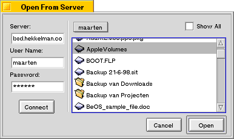
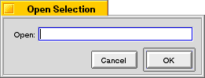
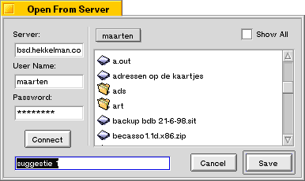
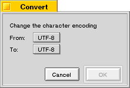
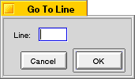

Dialogs
Pe has several dialogs. Three of them are described here, the other two have their own pages. Preferences and Window Options.
Open from Server
You can use this dialog to navigate the directories of a remote FTP server. The Checkbox "Show All" can be used to include files whose name starts with a dot (".") in the list. This dialog works pretty much the same as a normal File Open dialog except for the fact that you have to connect to a server by typing in the server name, your user name and your password and then click the Connect button.
Open Selection
This dialog is presented when you choose Open Selection from the File menu without first having made a selection. Here you can type the name of the file you wish to open. Pe will search for the file with the name you typed in the folders defined by the settings in the Search Paths pane in the preferences dialog.
Save On Server
This dialog is similar to the Open from Server dialog with the notable exception that you use this dialog to save a file instead of opening it.
Change Encoding
The Change Encoding is used to transliterate text. There are many character sets around, and docs originating from other platforms tend to have their characters encoded in different ways from the way they are usually encoded in BeOS. You can use this dialog to convert them to their closest match in another character set.
BeOS uses default the UTF-8 character set. Apart from UTF-8 the menus in this dialog offer 13 other character set encodings. E.g. Macintosh Roman is the default character set used on Macintosh computers and the earlier versions of BeOS. If you have documents created with DR8 you can change them to UTF-8 with this dialog.
Note: This option really changes the text, replacing each character by a character from the destination set, if necessary. You can use the Window Options dialog if you only wish to change the character set used for displaying (in fact interpreting) the text without changing it.
Go To Line
The Go To Line dialog can be used to move the caret to a specified line. Just enter the number of the line you want to go to and click OK.
Last updated: 09/10/98
Copyright 1997,1998, © Hekkelman Programmatuur,
info@hekkelman.com